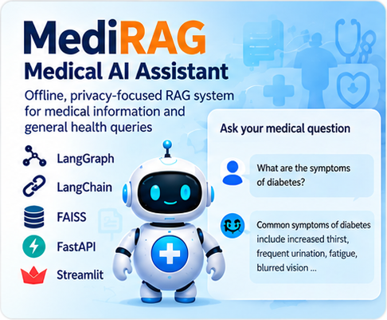
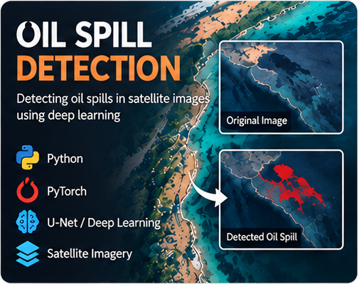
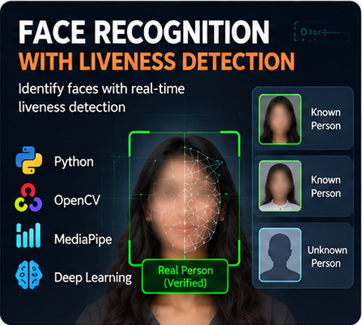
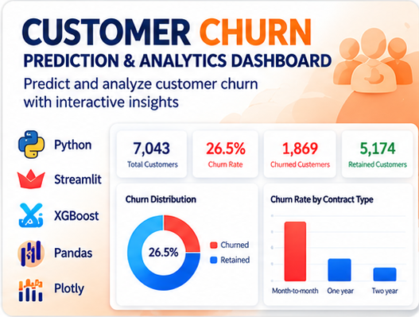
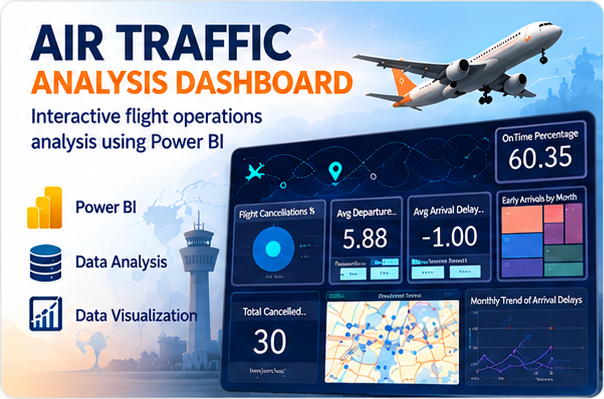
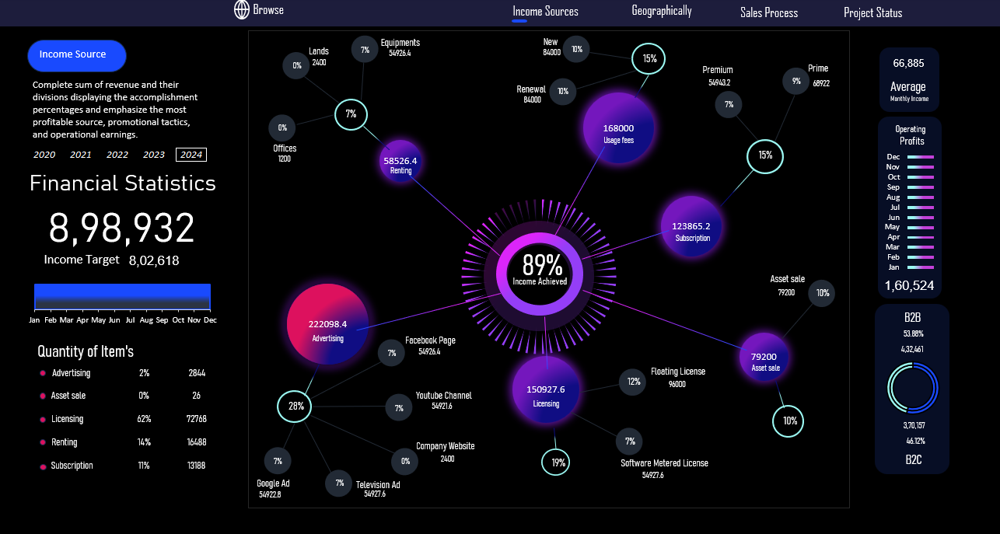
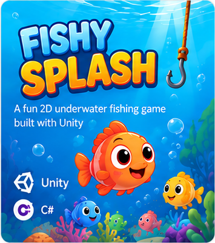
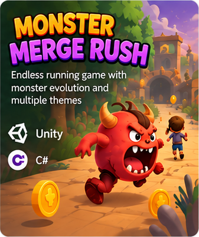

Machine Learning
Exploring machine learning concepts and experimenting with models through hands-on projects.
01AI · MACHINE LEARNING · DATA
AI and data science engineering student at VIIT, Pune. I build practical projects across generative AI, computer vision, and analytics—and enjoy bringing people together to make ideas happen.
A LITTLE INTRODUCTION
I’m an Electronics & Telecommunication Engineering student who enjoys learning by building across AI, machine learning, and analytics. I bring the same curiosity to collaboration and event leadership.
Exploring machine learning concepts and experimenting with models through hands-on projects.
01Learning to analyze datasets, discover patterns, and communicate insights through visualizations and dashboards.
02Experimenting with LLMs, RAG pipelines, and AI agents while building practical project prototypes.
03HOW I WORK
Small steps, thoughtful experiments, and consistent improvement.
SELECTED WORK
A selection of experiments and applications across AI, machine learning, and data analytics.

MEDIRAG · HEALTHCARE RAGBuilt a local RAG prototype using FAISS and Ollama. LangGraph routes record search, BMI calculation, and combined requests; answers include available source passages.
View project details ↗Explore flow diagrams ↗
OIL SPILL · SAR SEGMENTATIONAnalyzes SAR satellite imagery with a lightweight U-Net-style model, producing segmentation overlays, heatmaps, scene metrics, and a Streamlit review dashboard.
View project details ↗Explore flow diagrams ↗
FACE MATCH + LIVENESSCombines ArcFace identity matching with MediaPipe blink and head-motion cues, processed through OpenCV and a FastAPI backend.
View project details ↗Explore flow diagrams ↗
CUSTOMER CHURN · PREDICTIVE ANALYTICSA Streamlit analytics platform combining churn insights, SQL, XGBoost predictions, model evaluation, and data-quality checks.
View project details ↗Explore flow diagrams ↗
AIR TRAFFIC · POWER BIExplore 261,748 flight records through an interactive Power BI report featuring delay and cancellation KPIs, airline comparisons, monthly trends, airport mapping, and filters.
View project details ↗Explore flow diagrams ↗
FINANCIAL PERFORMANCE · 2024An interactive Excel dashboard for income sources, target tracking, monthly revenue, operating profit, and B2B/B2C performance across 2020–2024.
View project details ↗
FISHY SPLASH · UNITY GAMEA 2D Unity game with randomized fish movement, expressive catch reactions, and three playful gameplay levels.
View project details ↗Watch gameplay ↗
MONSTER MERGE RUSH · UNITY GAMEA 2D Unity endless runner with monster growth, group expansion, coins, bombs, and three changing worlds.
View project details ↗Watch gameplay ↗Project write-ups reflect the work described in my resume. I’m adding public demos and repositories as they’re ready to share.
TOOLS I WORK WITH
A practical mix of programming, data tools, and AI frameworks that I use while learning and building.
BEYOND THE TOOLKIT
I enjoy coordinating people and creating spaces where a team can do its best work.
LEADERSHIP
Women Empowerment Cell, VIIT · 2024
Collaborated with team members to organize cultural events and awareness workshops.
COMMUNITY
National Service Scheme
CONTINUOUS LEARNING
Coursework and industry certificates across analytics, AI/ML, and business intelligence.
Browse all certificates ↘LEARNING & CREDENTIALS
A collection of certificates in data analytics, AI/ML, statistics, and Power BI. Select any card to open its PDF.
HAVE AN IDEA OR OPPORTUNITY?
I’m always interested in learning, collaborating, and exploring opportunities in AI, machine learning, and data.